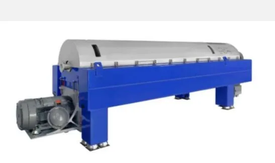

Engineered for the most demanding solid-liquid separation tasks in mining and mineral processing. Maximum capacity, ultimate reliability, and lowest power consumption in its class.
The Alfa Laval P3 series decanter centrifuges are specifically built to withstand the harshest processing environments on the planet. Primarily used in the mining and minerals industry, the P3 decanter provides extreme throughput for tailings treatment, water and chemical recovery, and mineral extraction processes.
With a deep-pond design and optimized cone angle, the P3 achieves exceptionally high cake dryness for dry stacking applications, while integrating high-grade Duplex stainless steel and heavy-duty bearings to ensure 24/7 reliability in remote locations.

Capable of handling extremely high solids loads and flow rates per unit, optimizing your facility's processing capacity.
All internal parts exposed to abrasion are protected by replaceable tungsten carbide tiles for maximum uptime against abrasive slurries.
Comes standard with the 2Touch control package, providing intuitive automation and real-time process monitoring.
Managing your plant's byproduct output:
Ensure your resource recovery is maximized with the most robust decanter on the market. Talk to our mining specialists at Brigantine today.